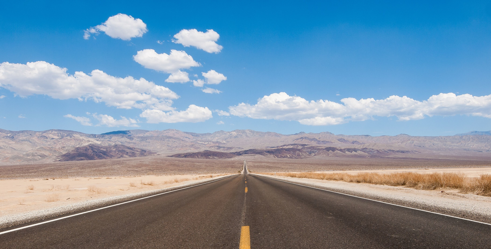

I don't have a favorite city. I don't travel often and I tend to spend most of my spare time indoors, but I do like to be out in nature.
I like to go on road trips, camping, and off-roading. Unfortunately these things cost time and money, both of which have been in short supply. Which is why I am hoping to get back into development, but maybe that wont help me either.